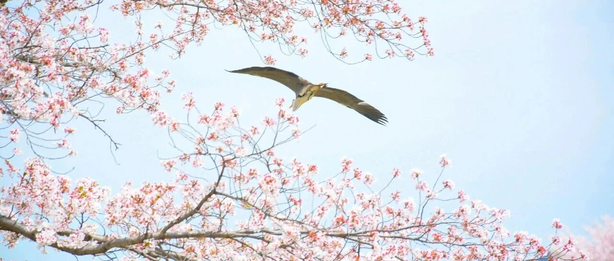

不完美的回答（1）~
在孩子这方面，读者的问题挺多的。
我没有什么标准答案可以给到大家，只能写一写自己在三个孩子身上，每个年龄段的一些做法，作为一个视角，而不是答案。
整体篇幅会较长，我尽量写得详细些，所以分成5-6篇，做成一个系列。
第二次创业失败后，我坠入低谷期。在这个阶段遇到了我媳妇，我有了共患难的搭档，在不久后的第三次创业中迎来了我大儿子。
创业期很忙碌，但基本的检查该做的都没落下。月龄差不多时，每隔些天会抽空陪肚子里的娃聊聊天，说一些开心的事，我媳妇情绪也都处于很正向的状态。
我对她是有亏欠的，她几乎是一己之力照顾好自己和孩子，还阅读育儿的相关书籍。我忙着公司里里外外的事，回家时整理好情绪，尽量把好的情绪带回家。
三个小孩基本都是我们自己带，刚出生的阶段有配月嫂，在这个过程中会去观察月嫂做了哪些事和动作，有什么寓意和效果，也会向月嫂请教一些问题。
慢慢地，就自己上道了。后来在孩子的成长过程中，遇到问题边琢磨边解决，一直到现在。
截止目前，老大15岁（13周岁），老二12岁（10周岁），老三的8岁（7周岁），龙凤胎年底（预计12月底-1月上旬？）到来。
… …
0-6个月时，会关注孩子的生理健康，比如吃奶的量大小、排便是否正常（量、形状、颜色等）。
整体是按需喂养，喂奶后竖抱拍嗝，预防胀气和吐奶。
有些婴儿经常哭，新手父母看吃奶和排便等都正常，尿不湿也是干的，不知道娃为什么不停啼哭。
这就有可能是胃胀气，要给娃拍嗝防胀气：每次喂奶后，竖抱轻拍背部至打嗝，减少吐奶和胃胀气。
准备好专属的小床，床上整洁杂物，避免枕头、毛绒玩具，预防窒息；睡觉刚开始仰躺为主，后期再侧卧，避免头型太扁等。
这个阶段，给孩子充足的睡眠挺重要的，发育需要。至于黄疸那些，该观察的观察，能适当晒晒太阳就晒晒太阳。
还有就是每天会给孩子做10-15分钟抚触，重点在背部和腹部，能促进娃的神经发育。
俯趴练习这些也没落下，每天数次，每次5-10分钟，让娃练习抬头。需要注意的是吃饱后不要俯趴，会吐奶；还会做一做被动操，活动四肢。
出生一两个月后，我会用黑白卡之类的物件，逗他们玩，大概距离眼前30-40cm左右，轻微摇晃，这样可以锻炼娃的视觉追踪能力。
此外就是基础的抓握，比如用摇铃、小布偶等，锻炼娃的手部抓握反射。
这个阶段，要重点关注和孩子之间安全感的建立，及时回应哭声，避免娃长时间哭泣。
刚出生的小孩，不要抱出去频繁接触成年人，因为这个阶段的娃没什么免疫力，很容易感染流感等病毒。
我家老大就是一个多月时，被老人抱出去炫耀，接触到了流感病毒，后来住进了ICU…
每每想起这段经历，心有余悸。
… …
6-12个月时:
5个月的娃，差不多开始进入口欲期了，啥都想往嘴里塞。
我家娃大多是6个月开始尝试辅食的:
一开始是添加高铁米粉，后来逐步引入如南瓜和胡萝卜之类的泥状食物，我家娃最喜欢蛇果泥和香蕉泥；
蛋黄也有添加，一开始只添加八分之一的蛋黄；
尝试辅食，要格外注意和避免过敏源，如蜂蜜、坚果碎等。
大动作方面:约5-6个月练习坐，7-8个月练习爬行，9-10个月扶站，12个月尝试行走。
三个娃都差不多，时间上会有一个月左右的差异，女娃会早一些。
这个阶段的婴儿，已经会开始有一些简单的发音，我们就是多重复简单词汇，如“妈妈”、“抱抱”之类的，模仿宝宝发音，引导他们学习和发音。
会做好语言和动作上的沟通和互动，比如躲猫猫、拍小手之类的。
重点是侧重精细动作的培养，让娃抓握小颗粒食物（比如花生和红豆，放到罐子里）、撕纸、戳洞玩具等，娃做得好，会鼓掌和口头表扬他们。
整体上，互动会更注重让孩子理解因果关系，比如按压发声玩具，让他理解“按压的这个动作”和“发出声音的这个结果”关系。
会给娃听一些音乐，比如巴塔木儿歌之类的，让娃更有音律和节奏感；
也会给娃讲一讲绘本，都是一些比较简单的动物、食物、玩具等生活中常见的物品。绘本都有图形、文字和拼音。
另外就是数字的认识，也差不多是在这阶段，只涉及0-10这种最基础的。
疫苗之类的，该种的照常种，根据进度和医生的指导来即可。
这篇先写到这，大家有经验的，欢迎评论区做个补充，多多益善~
下一篇主要是1-2岁、2-3岁这个阶段需要注意的事项和培育的能力。
明天见。